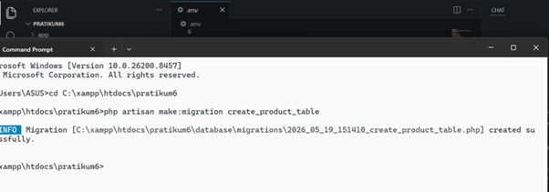
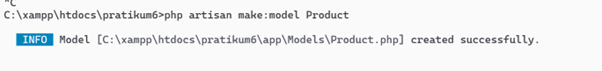
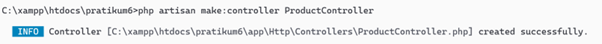

📖 Pendahuluan
Laravel merupakan framework PHP yang menggunakan arsitektur MVC (Model-View-Controller). Dalam praktikum ini, dilakukan implementasi komponen penting seperti Migration (membuat dan mengelola struktur tabel database), Seeding (pengisian data awal), Routing (menentukan URL dan respons), Model (Eloquent ORM untuk interaksi database), serta Controller (logika aplikasi). Praktikum ini menggunakan studi kasus tabel products (produk) untuk memahami alur kerja Laravel secara menyeluruh.
🎯 Tujuan Praktikum
- Membuat migration untuk tabel
productsbeserta field yang sesuai. - Menjalankan migration untuk menghasilkan tabel di database.
- Membuat seeder untuk mengisi data awal (dummy) ke dalam tabel products.
- Memahami dan mengimplementasikan routing dasar serta routing parameter.
- Membuat model Product yang terhubung dengan tabel menggunakan Eloquent.
- Membuat controller ProductController untuk menangani logika dan menghubungkan dengan route.
🛠️ Lingkungan Pengembangan (Tools)
📌 1. Persiapan Database
Sebelum membuat migration, terlebih dahulu dibuat database di phpMyAdmin. Database yang digunakan bernama pratikum_laravel (sesuai gambar). Berikut tampilan daftar database:

Gambar 1: Database pratikum_laravel telah dibuat di phpMyAdmin.
Kemudian konfigurasi koneksi database di file .env disesuaikan dengan nama database, username, dan password.
📌 2. Migration – Membuat Tabel Products
Migration digunakan untuk membuat dan mengelola struktur tabel database. Perintah berikut membuat file migration create_product_table:
php artisan make:migration create_product_table
Gambar 2: Membuat migration create_product_table (file berhasil dibuat).
Setelah file migration dibuat, buka file tersebut dan isi method up() dengan skema tabel products:
<?php
use Illuminate\Database\Migrations\Migration;
use Illuminate\Database\Schema\Blueprint;
use Illuminate\Support\Facades\Schema;
return new class extends Migration
{
public function up(): void
{
Schema::create('products', function (Blueprint $table) {
$table->id();
$table->string('name');
$table->integer('price');
$table->text('description');
$table->timestamps();
});
}
public function down(): void
{
Schema::dropIfExists('products');
}
};Selanjutnya jalankan migration dengan perintah:
php artisan migrate
Gambar 3: Proses migrasi berhasil, tabel products dan tabel lain (users, jobs) terbuat.
Jika ada perubahan struktur, dapat menggunakan php artisan migrate:rollback untuk membatalkan migrasi terakhir, atau php artisan migrate:fresh untuk menjalankan ulang seluruh migrasi.
📌 3. Seeding – Mengisi Data Awal Products
Seeder berguna untuk mengisi data dummy ke database. Buat seeder ProductSeeder:
php artisan make:seeder ProductSeederKemudian edit file database/seeders/ProductSeeder.php:
<?php
namespace Database\Seeders;
use Illuminate\Database\Seeder;
use Illuminate\Support\Facades\DB;
class ProductSeeder extends Seeder
{
public function run(): void
{
DB::table('products')->insert([
[
'name' => 'Laptop',
'price' => 7000000,
'description' => 'Laptop untuk pemrograman',
'created_at' => now(),
'updated_at' => now(),
],
[
'name' => 'Mouse',
'price' => 150000,
'description' => 'Mouse wireless',
'created_at' => now(),
'updated_at' => now(),
]
]);
}
}Tambahkan pemanggilan seeder di DatabaseSeeder.php:
$this->call(ProductSeeder::class);Jalankan seeder dengan perintah:
php artisan db:seedAtau jika ingin migrasi ulang sekaligus seeding:
php artisan migrate:fresh --seedGambar 4: (Tidak ada gambar spesifik untuk seeder, namun data berhasil masuk ke tabel products).
Catatan: Gambar seading db.png yang disediakan berisi tabel risiko, tidak relevan dengan produk, sehingga tidak disertakan.
📌 4. Routing – Menentukan URL dan Respon
Routing dikelola di file routes/web.php. Praktikum ini mencoba dua jenis routing: dasar dan parameter.
a. Routing Dasar
Mengubah route / menjadi:
Route::get('/', function () {
return 'Selamat Datang di Laravel';
});
Gambar 5: File routes/web.php dengan route dasar.
Hasil saat mengakses http://127.0.0.1:8000:

Gambar 6: Browser menampilkan "Selamat Datang di Laravel".
b. Routing Parameter (Produk ID)
Menambahkan route dengan parameter {id}:
Route::get('/produk/{id}', function ($id) {
return 'Produk ID: '. $id;
});
Gambar 7: Route /produk/{id} yang menampilkan ID produk.
Contoh akses: http://127.0.0.1:8000/produk/1 akan menampilkan "Produk ID: 1".
Ini adalah gambar prdk id yang diminta.
📌 5. Model – Interaksi dengan Database
Model menggunakan Eloquent ORM untuk mempermudah manipulasi data. Buat model Product:
php artisan make:model Product
Gambar 8: Model Product berhasil dibuat di app/Models/Product.php.
Secara default model akan terhubung ke tabel products (plural). Untuk keperluan CRUD, kita bisa menambahkan properti $fillable atau $guarded.
<?php
namespace App\Models;
use Illuminate\Database\Eloquent\Factories\HasFactory;
use Illuminate\Database\Eloquent\Model;
class Product extends Model
{
use HasFactory;
protected $fillable = ['name', 'price', 'description'];
}📌 6. Controller – Logika Aplikasi
Controller menghubungkan Model dan View. Buat controller ProductController:
php artisan make:controller ProductController
Gambar 9: Controller ProductController berhasil dibuat.
Kemudian tambahkan method index() untuk menampilkan data produk:
<?php
namespace App\Http\Controllers;
use App\Models\Product;
use Illuminate\Http\Request;
class ProductController extends Controller
{
public function index()
{
$products = Product::all();
return view('products', compact('products'));
}
}Hubungkan route ke controller di routes/web.php:
use App\Http\Controllers\ProductController;
Route::get('/products', [ProductController::class, 'index']);Untuk membuat controller sekaligus resource lengkap (CRUD), dapat menggunakan perintah:
php artisan make:controller ProductController --resourceResource controller menyediakan method: index, create, store, show, edit, update, destroy.
📌 7. View – Menampilkan Data dengan Blade
Buat file view resources/views/products.blade.php untuk menampilkan daftar produk:
<!DOCTYPE html>
<html>
<head>
<title>Data Produk</title>
</head>
<body>
<h1>Daftar Produk</h1>
<ul>
@foreach ($products as $product)
<li>{{ $product->name }} - Rp {{ number_format($product->price, 0, ',', '.') }}</li>
@endforeach
</ul>
</body>
</html>Setelah itu akses http://127.0.0.1:8000/products untuk melihat hasil dari model dan controller yang telah dibuat.
📋 Rangkuman Perintah Artisan yang Digunakan
| Kategori | Perintah |
|---|---|
| Migration | php artisan make:migration create_product_tablephp artisan migrate |
| Seeder | php artisan make:seeder ProductSeederphp artisan db:seed |
| Model | php artisan make:model Product |
| Controller | php artisan make:controller ProductControllerphp artisan make:controller ProductController --resource |
| Route | php artisan route:list |
| Server | php artisan serve |
Tips: Gunakan shortcut php artisan make:model Product -mcs untuk membuat Model, Migration, Controller, dan Seeder sekaligus.
✅ Kesimpulan
Praktikum ini berhasil mengimplementasikan komponen penting dalam Laravel: Migration untuk membuat tabel products, Seeder untuk mengisi data awal, Routing (dasar dan parameter), Model untuk berinteraksi dengan database, serta Controller yang menghubungkan model dan view. Semua perintah Artisan dijalankan dengan lancar dan menghasilkan tampilan sesuai harapan. Pemahaman tentang alur MVC dan fitur-fitur Laravel ini menjadi fondasi untuk pengembangan aplikasi web yang lebih kompleks seperti CRUD data mahasiswa atau produk.
Seluruh kode dan file proyek telah diunggah ke repository GitHub masing-masing sesuai ketentuan tugas.
🔗 Tautan Repositori GitHub
Kunjungi Repo →📸 Galeri Dokumentasi Praktikum